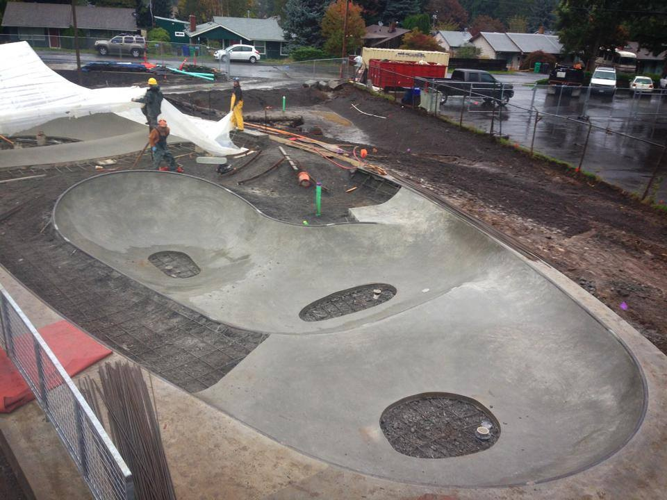
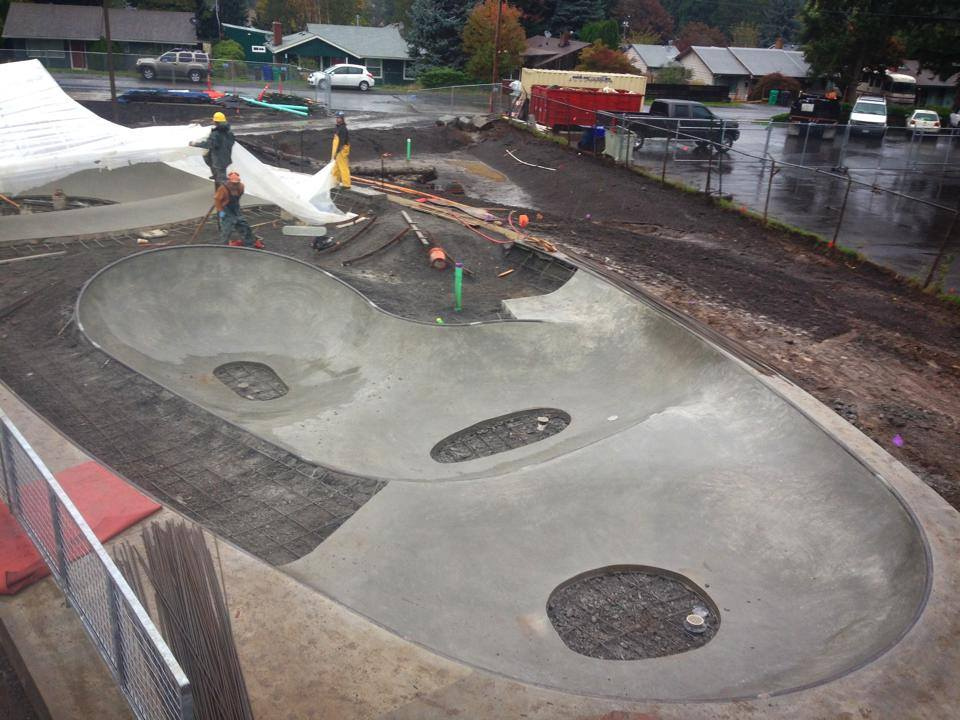
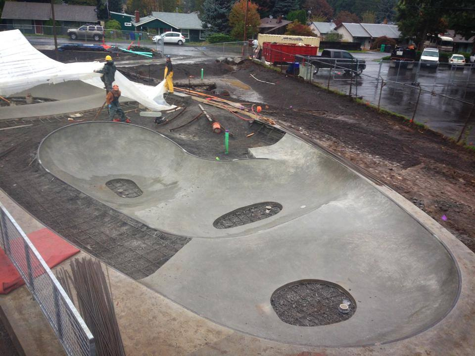

Alberta is the newest addition to Portland skate parks. The new Khunamokwst park was bulit in 2015 and has the new skate park in it. The residents voted on what park design would be best and agreed on the layout bellow.
The Alberta skate is completely transition and truly a unique design. Its all one big bowl with a smaller bowl in the center with a brake in the coping allowing riders to roll in. The park is good for all level of skaters interested in tranny skating. The only street it has is a circular manny pad (far right) and a nice 3 block (far left).
Alberta is so new this is the first and only video of the park. It captures it well showing everything it has to offer.
